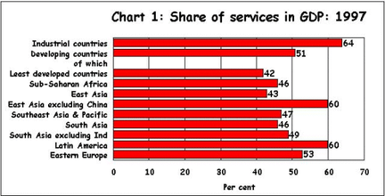

Международная торговля на рынках услуг
Оборот услуг практически невозможно регулировать таможенными пошлинами и акцизами, но услуги составляют уже более 20% от объема международной торговли. Рассматриваются различные аспекты международной торговли услугами -- субсидирование социальных услуг, регулирование миграции, влияние развития информационных технологий и т.д.
Введение
Общеизвестен факт, что на протяжении всего XX века сектор услуг рос опережающими темпами по сравнению с остальными секторами экономики. Наиболее заметна эта тенденция в развитых странах, в которых сектор услуг составляет от 60% до 80% ВВП - так что, возможно, вместо "индустриально развитых" эти страны было бы правильнее называть "сервисно развитыми". Напротив, в большинстве развивающихся стран доля сервисов в ВВП значительно меньше, а в беднейших странах часто составляет менее половины.
Диаграмма из статьи Services Sector Growth : What Does it Mean? Nov 16th 1999, C P Chandrasekhar & Jayati Ghosh

Услуги отличаются от товарного производства меньшей капиталоемкостью и большей трудоемкостью. Строго говоря, разница между секторами по этим параметрам меньше внутрисекторного разброса этих же параметров, но в среднем это утверждение справедливо.
Также известно, что в развивающихся странах, обычно из-за более низкой капиталовооруженности (но иногда также и из-за структурных и институциональных проблем, в частности из-за неразумной политики регулирования) производительность труда в целом ниже, чем в развитых странах, поэтому рабочие руки и ресурсы стоят дешевле. Поэтому в развивающихся странах сектор услуг (как внутренних, так экспортных) должен был бы расти опережающими темпами - не только по сравнению с производственными секторами, но и по сравнению с соответствующими секторами экономик развитых стран.
Исходя из этого соображения можно предположить, что структура экономик развитых и развивающихся стран должна была бы быть в точности обратной: сектор услуг должен преобладать в развивающихся странах. Для некоторых стран это справедливо; так, по данным CIA World Factbook, доля сектора услуг в ВВП Гонконга составляет более 90%. Но в среднем это не так. Это означает, что на практике мы сталкиваемся с более сильными противоположно направленными тенденциями, и наблюдаемые факты нуждаются в дополнительных объяснениях.
Объяснения опережающего роста сектора услуг многочисленны; среди них следует упомянуть:
1. "Экстернализацию" услуг, которые ранее оказывались по бартеру или в рамках сложных систем взаиморасчетов внутри домохозяйства или общины. Так, в примитивном обществе юридические услуги оказывает старейшина, а белье стирает жена, и это не может быть учтено в ВВП. Напротив, в современном обществе юридические услуги оказывает адвокат, а белье стирает прачечная - то и другое делается за деньги и учитывается в статистике ВВП.
В современных условиях большую роль также играет отчасти аналогичное явление, известное как outsourcing, когда предприятия передают функции, ранее исполнявшиеся их "затратообразующими" подразделениями, внешним компаниям. Например, вместо того, чтобы нанимать бухгалтера и платить ему зарплату, предприятие обращается к внешней бухгалтерской компании. Обычно это осуществляется с целью сокращения издержек и/или контроля над ними.
Видно, что в данном случае опережающий рост сферы услуг является чистым методологическим артефактом: одна и та же деятельность, будучи по разному организационно оформлена, оказывается относящейся к разным статистическим категориям.
2. Высвобождение рабочих рук в результате повышения производительности труда в промышленности и сельском хозяйстве; в соответствии с законом Сэя, предложение равно спросу, поэтому сужение спроса на рабочие руки в промышленности, обусловленное повышением производительности труда, приводит к расширению или созданию предложения для других отраслей экономики. В действительности, здесь мы имеем дело с несколько более сложной причинно-следственной цепочкой; так, неясно, почему повышение производительности труда в промышленности обязательно приводит к высвобождению рабочих рук, а не к увеличению производства.
3. Появление целых отраслей, относящихся к сфере услуг, для которых в доиндустриальных и "классических" индустриальных обществах вообще нет аналогов - например, разработки программного обеспечения. Впрочем, это объяснение порождает тот же вопрос, что и предыдущее: ведь известно, что в "материальных" секторах экономики также возникло немало принципиально новых отраслей, то есть само по себе оно не может объяснить опережающего роста сферы услуг.
4. Так называемый "постиндустриальный переход"; впрочем, это понятие является не столько объяснением, сколько просто альтернативным описанием наблюдаемого явления. Тем не менее, понятие "постиндустриального перехода" часто оказывается основанием для выдачи политических рекомендаций, сводящихся к простому рассуждению: "в развитых странах сектор услуг растет опережающими темпами, поэтому если мы обеспечим опережающий рост сектора услуг в нашей стране, то она станет развитой".
В такой формулировке подобные рекомендации звучат как примитивное магическое мышление; разумеется, на практике подобные рекомендации используют более сложную и наукообразную аргументацию, опирающуюся на менее очевидные логические ошибки, поэтому часто они звучат намного убедительнее, но логический скелет этих рекомендаций именно таков.
Далее в этом обзоре мы увидим, что - по крайней мере иногда и по крайней мере частично - опережающий рост сектора услуг может быть проявлением патологических тенденций как в развитии национальных экономик, так и в международной торговле.
Так, повышение доли расходов на здравоохранение в ВВП может отражать не только повышенное внимание, уделяемое людьми своему здоровью, но и картелизацию медицинского рынка, которая стала возможна из-за неразумной - или, хуже того, продиктованной отраслевыми лоббистами - политики регулирования. Непропорционально высокая доля юридических и арбитражных услуг также может рассматриваться как симптом неадекватной системы поддержания правопорядка.
В статье The world's health care: How do we rank? S. Landers, American Medical News, Aug 28, 2000 приводится любопытная таблица: доля медицинских расходов в ВВП и расходы на душу населения для 15 стран, системы здравоохранения в которых по состоянию на 2000 год были признаны ВОЗ лучшими.
Качество системы здравоохранения оценивалось по достаточно сложной индексной схеме, учитывавшей такие объективные показатели, как продолжительность жизни, хронические заболевания, приводящие к инвалидности, детская смертность и, наконец, субъективную удовлетворенность пользователей доступностью и качеством обслуживания и сохранением медицинской тайны. Кроме того, учитывалась также "справедливость" в распределении медицинских услуг.
Хотя методологические сложности при сведении всех этих показателей в единый интегральный показатель очевидны, сам по себе список "лучших" стран вряд ли может вызвать сильные возражения. Самое интересное в этой таблице, впрочем, не сам список, а то, что абсолютные величины расходов различаются в разных странах на порядок, да и и по отношению к ВВП разница достигает нескольких раз. Видно, что ни доля в ВВП, ни среднедушевые расходы на здравоохранение никак не связаны ни с "объективным", ни с субъективно воспринимаемым качеством получаемой услуги; пересчет по паритету покупательной способности также не приводит к сглаживанию различий.
|
|
Мед. расходы |
Расходы на |
|
|
|
% от ВВП |
душу населения |
Население |
|
1. Франция |
9.8% |
$2,369 |
59 миллионов |
|
2. Италия |
9.3% |
$1,855 |
57 миллионов |
|
3. Сан Марино |
7.5% |
$2,257 |
26,000 |
|
4. Андорра |
7.5% |
$1,368 |
75,000 |
|
5. Мальта |
6.3% |
$551 |
386,000 |
|
6. Сингапур |
3.1% |
$876 |
3.5 миллиона |
|
7. Испания |
8.0% |
$1,071 |
39 миллионов |
|
8. Оман |
3.9% |
$370 |
2.4 миллиона |
|
9. Австрия |
9.0% |
$2,277 |
8.2 миллионов |
|
10. Япония |
7.1% |
$2,373 |
126 миллионов |
|
11. Норвегия |
6.5% |
$2,283 |
4.4 миллиона |
|
12. Португалия |
8.2% |
$845 |
9.8 миллионов |
|
13. Монако |
8.0% |
$1,264 |
33,000 |
|
14. Греция |
8.0% |
$905 |
10 миллионов |
|
15. Исландия |
7.9% |
$2,149 |
279,000 |
|
&NBSP |
|||
|
37. США |
13.7% |
$4,187 |
276 миллионов |
Вообще, опережающий рост какого либо сектора экономики всегда объясняется тем, что в данных условиях данный сектор имеет относительное преимущество (вложения капиталов и труда в этот сектор дают наибольшую отдачу). В условиях свободного рынка это означает, что данный сектор удовлетворяет наиболее насущные (или, точнее, воспринимаемые в данный момент как наиболее насущные) нужды потребителей и/или может наилучшим образом использовать доступные средства производства.
В условиях регулируемого рынка добавляется еще две возможные причины - что действующие регулятивы либо прямо дают преимущества данному сектору (например, субсидирование соответствующей деятельности), либо ущемляют другие секторы, которые могли бы использовать те же факторы производства и/или удовлетворять те же потребности. Словосочетание "действующие регулятивы" надо в данном случае понимать буквально, т.е. нормативный акт, "несовершенство которого компенсируется необязательностью его исполнения", является недействующим.
Таким образом, на регулируемом рынке относительное преимущество и опережающий рост определенного сектора может быть результатом (возможно - непреднамеренным и даже нежелательным) регулирования других секторов экономики.
Так, опережающий рост оффшорного программирования в Индии может объясняться не только и даже не столько тем, что для программирования в Индии какие-то сверхъестественно хорошие условия, но и тем, что условия для остальных видов экономической деятельности там относительно хуже.
Впрочем, эти соображения сами по себе не могут рассматриваться как основа для политических рекомендаций, во всяком случае - как основа для рекомендаций по какому-либо регуляторному ущемлению сектора услуг и искусственного замедления его роста фискальнымии или другими средствами.
Мы не можем утверждать, что знаем, какая доля сектора услуг в ВВП и какие темпы его относительного роста были бы оптимальны. Более того, есть достаточно убедительные основания для утверждения, что никто этого заранее знать не может, особенно если учесть, что под названием "сектор услуг" объединяется множество разнородных сфер деятельности.
Но существует гораздо более простое соображение: объем международного рынка услуг на 2000 год оценивается в 1400 млрд. долларов США (http://192.91.247.38/tab/pubs/itcdtab20_en.pdf), т.е. приблизительно в 20% от общего объема мировой торговли. Отказываться от освоения этого рынка было бы просто глупо.
Определение услуги
В современной статистике сектор услуг противопоставляется двум другим секторам - промышленности и сельскому хозяйству; иногда используется и более мелкое деление, например промышленность делят на собственно промышленность (т.е. перерабатывающие предприятия) и деятельность по добыче природных ресурсов - тем не менее сектор услуг и при таком более мелком делении признается достойным отдельного статуса.
Прежде чем мы сможем понять, что же такого отдельного в этом статусе, необходимо для начала определить, что же такое услуги и чем они отличаются от других направлений экономической деятельности.
Одно из распространенных определений восходит к Адаму Смиту, и состоит в том, что услуги представляют собой "неосязаемые" товары, потребляемые и исчезающие непосредственно в момент производства. Эта "неосязаемость" привела Адама Смита к выводу, что услуги не имеют долгосрочной экономической ценности и не заслуживают серьезного экономического рассмотрения.
В соответствии с этой доктриной, непосредственно заимствованной марксизмом у классиков политэкономии, в советской статистике услуги считались вспомогательным сектором экономики. В статистике услуг учитывались только услуги населению, а услуги, оказываемые промышленным предприятиям и имеющие непосредственное и несомненное отношение к производству "долгосрочных экономических ценностей" - такие, как транспорт - либо считались частью производственного процесса, либо самостоятельными отраслями.
Данное определение неудовлетворительно; оно могло бы казаться убедительным во времена Адама Смита, но вряд ли приемлемо в наше время. Так, результат услуги по разработке программного обеспечения под заказ вовсе не исчезает в момент поставки заказчику (разумеется, если услуга была оказана с должным качеством) и, разумеется, имеет долгосрочную экономическую ценность. Также было бы очень сложно, не погрешив против здравого смысла и школьного курса физики, определить "неосязаемый товар" так, чтобы услуги электросвязи оказывались "неосязаемыми", а силовая электроэнергия - "осязаемым" товаром.
Значительно более удовлетворительное определение может быть получено, если мы уточним, что такое противоположность услуге - торговля товарами. А именно, при товарном обмене стороны обмениваются некоторыми "осязаемыми" объектами, товарами. В наше время одним из этих товаров обычно являются деньги. При этом - как, например, при продаже недвижимости или при безналичном денежном расчете - обмена самими этими объектами может не происходить. То, что передается на самом деле - это право собственности на объекты. Говоря короче, товар - это то, что является собственностью. Соответственно, услуга - это то, что собственностью не является и/или являться не может.
Предоставление услуги, таким образом - это контракт, в котором одна из сторон (реже - обе) предоставляет другой нечто, что не является предметом собственности, но по той или иной причине ценно для этой другой стороны. Нередко при предоставлении услуги все-таки происходит обмен предметами собственности - так, программное обеспечение может поставляться на CD-ROM. Точное определение, таким образом, требует оговорки, что услуга - это контракт, в котором цена передаваемых объектов собственности (если такие объекты вообще существуют) мала по сравнению с полной суммой контракта.
Такое определение гораздо лучше, чем предыдущее, согласуется со здравым смыслом и с тем, что обычно подразумевают под "услугой", хотя и это определение оставляет спорные и "серые" зоны. Так, если мы признаем понятие интеллектуальной собственности, то некоторые, а то и все информационные услуги в действительности оказываются товарообменом. На практике, информационные услуги, например юридические или НИОКР, все-таки относят именно к услугам (хотя, разумеется, сам по себе этот факт вряд ли может служить аргументом против понятия интеллектуальной собственности).
Серой зоной по прежнему оказывается электроэнергетика; действительно, электроэнергия обычно не считается собственностью (одной из причин этого может быть тот факт, что один киловатт-час электроэнергии физически ничем не отличается от другого киловатт-часа); с другой стороны, электроэнергия в определенном смысле таки похожа на другие объекты собственности, а именно - в силу закона сохранения энергии, если у кого-то прибавился киловатт-час, то где-то (не обязательно, но возможно, что у кого-то) один киловатт-час энергии (не обязательно электрической) должен был убавиться.
Еще одной серой зоной оказывается разграничение между производством услуг и арендой собственности, например между транспортной услугой и арендой транспортного средства. Поскольку многие современные услуги относительно капиталоемки, доля арендных или амортизационных платежей в себестоимости таких услуг может быть значительной, и вообще вопрос о таком разграничении часто оказывается довольно сложным. На практике основным разграничительным принципом оказывается следующее: если контракт предусматривает одну только передачу собственности во временное пользование, то это аренда. Если контракт предусматривает участие владельца арендуемой собственности или нанятых им работников в эксплуатации арендуемого объекта, то это услуга.
В соответствии с этим принципом, если я беру напрокат машину и вожу ее сам - это аренда. Если я нанимаю машину с водителем, то это транспортная услуга. Если я снимаю квартиру и сам делаю в ней уборку и даже мелкий ремонт - это аренда, если же я проживаю в гостинице, где уборкой занимается наемный персонал - это услуга.
Таким образом, производство услуг подразумевает непосредственное участие в процессе производства самого поставщика услуги или нанятых им работников. В частности именно поэтому можно утверждать, что услуги - при прочих равных условиях - должны быть более трудоемки, чем "материальные" производства.
Поскольку услуги не предполагают ни передачи собственности, ни аренды, то имущественное и арендное право на них не распространяется или распространяется лишь косвенно. Основой законодательного регулирования сферы услуг является контрактное и/или обязательственное право. Во многих странах некоторые важнейшие отрасли сферы услуг - например, медицина - регулируются отдельными законами и ведомственными подзаконными актами. Часто эти законы и акты имеют разделы, устанавливающие отдельные правила для международных услуг.
В соответствии с предложенным определением, услугами оказываются следующие направления экономической деятельности (перечислены только услуги, которые предоставляются на законной основе, за денежное вознаграждение, и при этом плата составляет значительную (не менее процента) долю ВВП, а самим предоставлением услуги занята значительная часть трудоспособного населения):
· Туризм и "индустрия развлечений".
· Бытовые услуги - "общепит", парикмахерские, домработницы, няни и т.д., а также коммунальные услуги.
· Медицинские услуги.
· Строительные и ремонтные работы.
· Юридические и арбитражные услуги.
· Охранные услуги.
· Финансовые, в том числе инвестиционные, брокерские и страховые услуги.
· Образование.
· Научно-исследовательские и опытно-конструкторские разработки, в том числе разработка программного обеспечения.
· Услуги по установке, настройке и поддержке программного обеспечения (эта деятельность вынесена в отдельную категорию не потому, что она так уж самостоятельно важна, а потому что, будучи близка как к НИОКР, так и к обслуживанию оборудования, она, строго говоря, не попадает ни в одну из этих категорий).
· Услуги по ремонту и наладке сложного оборудования, как промышленного, так и бытового. В составе этой группы услуг необходимо отдельно упомянуть пусконаладочные услуги и гарантийное обслуживание, контракт на которые часто (но не обязательно) приобретается вместе с оборудованием.
· Услуги связи.
· Информационные услуги, в том числе средства массовой информации.
· Транспортные услуги.
· Россия - одна из немногих стран, которая предоставляет на коммерческой основе еще один тип услуг, в каком-то смысле родственный транспорту, но достаточно специфичный, чтобы классифицироваться и рассматриваться отдельно: услуги по выведению груза на околоземную орбиту.
Видно, что эта классификация включает в себя как услуги, оказываемые частным лицам, так и услуги, оказываемые предприятиям и государству. Многие из этих сфер деятельности - такие, как медицина, образование и НИОКР - играют ключевую роль в обеспечении качества жизни и научно-технического прогресса. Некоторые другие - например, транспортные и финансовые услуги - играют ключевую роль в обеспечении материального производства и торговли.
Современные услуги связи делают возможными - и даже весьма прибыльными - такие бизнес-модели производства международных услуг, которые еще десять лет назад казались просто немыслимыми. Тема размещаемых в Индии call-центров привлекла внимание СМИ лишь недавно, однако этой индустрии не меньше пяти лет.
В основе своей идея оффшорных call-центров достаточно проста: различного рода "диспетчеры на телефоне", такие, как службы технической поддержки, резервирования авиабилетов и т.д. весьма популярны. Современные средства связи позволяют оказывать такие услуги для развитых стран из стран третьего мира, прежде всего из Индии. Это позволяет сэкономить на аренде помещений и зарплате персонала. Разумеется, чтобы экономия была возможна, необходима была настоящая революция в технологиях межконтинентальной связи и соответствующее падение цен и повышение качества.
При этом задержки при передаче сигнала по оптоволоконному кабелю достаточно низки, а индусы (во всяком случае те, кого берут на работу в такие центры) достаточно хорошо знают английский язык и американские культурные реалии, так что заказчик из США обычно даже не догадывается, что его вызов обрабатывается где-нибудь в Бангалоре (http://www.cybracero.com/articles/bangalore1.html).
Индустрия удаленного обслуживания в Индии объединяет целую группу направлений деятельности под названием IT-enabled Services. ITES включает в себя:
· Сервисы взаимодействия с заказчиками.
· Обработку счетов кредитных карт, страховых выплат и начисления зарплаты.
· Создание и поддержку информационных баз в виде сетевых центров данных
· и их использование в информационных сервисах, таких, как службы технической поддержки.
· "генерацию цифровых данных", или, попросту говоря, перевод в электронную форму (преимущество при помощи ручного ввода) данных, ранее существовавших в виде бумажных архивов, прежде всего медицинских записей.
Среди привлекательных направлений развития аналитики перечисляют также:
· Телемаркетинг.
· Продажи и маркетинг через Web.
· Расширение деятельности на другие бухгалтерские и финансовые операции.
По оценкам National Association of Software and Service Companies's (NASSCOM's) Индии, прибыли от ITES составляли $565 миллионов в 1999-2000годах, $930 миллионов в 2000-01, $1,475 миллионов в 2001-02 и до $2,400 миллионов в 2002-03 и обеспечивает занятость 160 тысячам человек. Таким образом, хотя эта отрасль до сих пор и остается в тени оффшорного программирования, но растет опережающими по сравнению с ним темпами. При этом, несмотря на гораздо меньшие обороты по сравнению с разработкой ПО, ITES обеспечивает занятость относительно большему числу людей - это вполне естественно, ведь эта работа относительно низкоквалифицированна и предполагает значительно более низкие зарплаты, чем разработка ПО.
Мировой рынок услуг ITES и аутсорсинга бизнес-процессов оценивается в 700 миллиардов долларов; поскольку аутсорсинг обычно приводит к снижению затрат, кризис может привести только к повышению интереса к этой сфере деятельности. По материалам Business Process Outsourcing: The New Mantra Jun 25th 2003, C. P. Chandrasekhar
Регулирование рынка услуг.
На практике, политика регулирования международного рынка услуг оказывается тесно связана с политикой регулирования на соответствующих внутренних рынках.
Наиболее распространенной и наиболее очевидной формой такой связи является сочетание лицензионной и/или антимонопольной политики на внутреннем рынке с протекционистской политикой на внешнем рынке. Действительно, как показано в обзоре Антимонопольное законодательство и международная торговля, антимонопольная политика на практике оказывается политикой защиты некоторых предприятий, действующих на внутреннем рынке, от конкурентов.
Разумеется, такая защита не может быть эффективна, если зарубежные конкуренты имеют свободный доступ на внутренний рынок. Также разумеется, если антимонопольные или лицензионные регулятивы принимались под давлением отраслевого лобби, то у этого лобби хватит политического влияния также и на то, чтобы продавить протекционистские меры.
Распространенным примером такой политики является сочетание лицензий права занятия медицинской практикой в сочетании с отказом признавать дипломы иммигрантов - многие обладатели советских врачебных дипломов столкнулись с этой проблемой при эмиграции в США.
В ряде случаев, особенно когда соответствующий сегмент внутреннего рынка жестко зарегулирован, внешний рынок используется как "предохранительный клапан" для компенсации возникающих на внутреннем рынке диспропорций, избытков и дефицитов. Слова о "предохранительном клапане", разумеется, не встречаются открытым текстом в официальных документах и политических дебатах, но исследователи нередко их используют (http://economics.uta.edu/facpages/kelly/Chapter15.htm).
В Великобритании медицинское обслуживание полностью национализировано. Подготовка медицинских работников контролируется при помощи вполне социалистических мер, в соответствии с планируемыми потребностями госпредприятий (http://www.chsrf.ca/docs/finalrpts/bloor_e.pdf).
Впрочем, поскольку правительство не может принуждать абитуриентов поступать именно в медицинские ВУЗы и среднеспециальные учебные заведения, время от времени возникающие дефициты медицинских работников приходится компенсировать за счет снижения иммиграционных барьеров и прямой рекламы иммиграции. Так, в феврале 2003 года была запущена рекламная кампания в медицинских журналах 11 стран, рекламирующая возможности трудоустройства в Великобритании.
Самые амбициозные из планов предполагают найм 15000 иммигрантов к 2008 году (http://news.bbc.co.uk/2/hi/health/2989959.stm). В тексте сказано, что эта цифра относится только к дипломированным врачам, но, по видимому, речь идет не только о врачах, но и о младшем медицинском персонале, потому что большинство других цифр в том же источнике расходятся с указанной приблизительно на порядок; так, по данным, приводимым в статье, к 2005 году планируется нанять 1000 врачей.
Благодаря этой политике, Великобритании удается удерживать один из самых низких уровней расходов на здравоохранение в расчете на душу населения среди развитых стран (US$1549 в год по данным http://www.chsrf.ca/docs/finalrpts/bloor_e.pdf).
Недовольство такой политикой вылилось в неожиданную форму: Великобритания оказалась на одном из первых мест в мире по количеству уголовных дел, заводимых по обвинениям во врачебных ошибках. Возникновение тенденция обвинять врачей в убийстве по неосторожности четко прослеживается как начинающаяся в 1990м году. По данным, приводимым в редакционной статье в British Medical Journal (http://bmj.bmjjournals.com/cgi/content/full/327/7424/1118), c 1867 по 1989 годы в Британии было всего семь случаев предъявления таких обвинений; c 1990 по 2000 годы было 13 таких процессов, в которых участвовало 17 врачей. Практически все без исключения обвиняемые были иммигрантами, часто недавними.
В некоторых случаях внутреннее регулирование прямо способствуют росту международного рынка услуг. Так, рост ITES (IT-enabled services, обеспечиваемые информационными технологиями услуги) индустрии в Индии обусловлен более низкой средняя зарплатой (особенно для малоквалифицированных работников) и более низкой стоимостью аренды помещений в Индии по сравнению с развитыми странами. Частично такая разница обусловлена "объективными" факторами, а именно более низкой производительностью труда в Индии (как средней, так и маргинальной).
Однако существуют и другие факторы, действующие в том же направлении, а именно, трудовое законодательство развитых стран (в первую очередь законы о минимальной оплате труда, особенно актуальные в низкооплачиваемых сегментах рынка труда), налоговая политика и правила торговли и аренды недвижимости, в первую очередь правила зонирования, которые ограничивают предложение офисных помещений и - в соответствии с законами рынка - приводят к росту цен на такие помещения.
Регулирование внутреннего рынка услуг
Приемы регулирования внутреннего рынка услуг включают в себя:
1. Обязательную сертификацию и лицензирование.
2. Принятие специальных законов и даже кодексов, регулирующих отдельные отрасли (особенно финансы, здравоохранение или образование).
3. Создание специальных регулирующих ведомств, имеющих право устанавливать собственные регулятивы в виде подзаконных актов, и иногда получающих статус министерств.
4. Различные меры, обеспечивающие и узаконивающие деятельность отраслевых профсоюзов.
5. Прямое регулирование условий труда и заработной платы.
6. Установление юридических и фактических монополий, картелей, цехов и т.д.
7. Антимонопольное и антидемпинговое законодательство.
8. Прямое регулирование номенклатуры и качества предоставляемых услуг.
9. Прямое регулирование цен.
10. Субсидирование, как прямое, так и косвенное. С небольшой натяжкой к этой же категории регулирования можно отнести налоговые льготы.
11. Разнообразные регулятивы, призванные прекратить или хотя бы сократить нецелевое (что бы под этим ни подразумевалось) использование субсидируемых услуг, в том числе экспорт субсидируемых услуг или товаров (или других услуг) производимых с их помощью. Далее мы будем для краткости называть это явление "экспортом субсидий". Через этот механизм нередко регулирование "перетекает" в отрасли, технологически связанные с регулируемой - например, зарегулированная медицина приводит к регулированию медицинского образования.
12. Национализацию и другие формы огосударствления; так, городской транспорт во многих странах принадлежит муниципалитетам.
13. Планово-убыточные национализированные или муниципальные предприятия - сочетание субсидирования и национализации; любопытно, что в это состояние отрасль может приходить по двум траекториям: когда субсидирование предшествует национализации либо когда сначала происходит национализация прибыльных предприятий, затем национализированные предприятия становятся убыточными, и, наконец, факт убыточности оказывается всеми признан, для всех привычен и прописан в бюджет отдельной строкой.
14. Бесплатные услуги, оказываемые планово-убыточными - "бюджетными" - государственными предприятиями.
Теоретическое обоснование этих мер отличается большим разнообразием. Во многих случаях речь идет об откровенном подкупе избирателей - например, когда субсидируемое здравоохранение называют "социальным завоеванием" - либо о столь же откровенном удовлетворении требований отраслевых лоббистов.
Нередко в защиту жестких приемов регулирования выдвигаются и более убедительные соображения - как "чисто прагматические", например вопросы качества услуг или безопасности, так и теоретические - например, теории "естественной монополии" (для установления монополий, чаще всего транспортных и телекоммуникационных), "равных стартовых условий" (для субсидирования образования), "общественного блага" (для субсидирования транспорта или эпидемиологической медицины).
Нередко сильная зарегулированность отдельных отраслей вообще не имеет никакого убедительного объяснения и оказывается простым исторически сложившимся результатом явления, известного как "эффект храповика" (ratchet-wheel effect, в русскоязычной литературе это явление иногда также называют "порочным кругом"), когда негативные последствия ранее введенных регулятивов пытаются преодолеть новым регулированием, а не отменой этих самых ранее введенных регулятивов.
Так, неразумная лицензионная политика приводит к картелизации рынка, повышению цен и сокращению предложения; это пытаются преодолеть субсидированием; затем возникают вопросы о коррупции при распределении субсидий и/или их нецелевом использовании (или просто скрытом перераспределении) и отрасль национализируют. Как уже отмечалось, иногда субсидирование начинается уже после национализации.
Наиболее интересные события, связанные с регулированием, субсидированием и частичной - а в некоторых странах и полной - национализацией здравоохранения происходили в первой половине XX века, а в некоторых странах - например в Германии, которая была пионером в деле национализации медицины - вообще в конце XIX столетия.
Так, историю социализации медицины в Канаде обычно отсчитывают от акта 1948 года об обязательном всеобщем государственном страховании, принятого провинцией Саскачеван, и лишь некоторые источники - например, http://economics.uta.edu/facpages/kelly/Chapter15.htm, вообще упоминают о более ранних событиях, например о программах государственного страхования, принятых в ряде провинций Канады в 30х годах и о профсоюзных кампаниях, направленных на принятие национальных законов о страховании.
Представление о том, что происходило с здравоохранением развитых стран в 30е годы, можно получить, например, по состоянию дел в идущих тем же путем развивающихся странах.
В соответствии с данными, приводившимися в докладе Алекса ван ден Хивера перед комитетом по здравоохранению Национального Собрания ЮАР в марте 2001 года, частный сектор здравоохранения за 15 лет вырос на 351% (с поправкой на инфляцию), в то время, как бюджетный сектор рос только пропорционально инфляции; при этом, при расчетах ассигнований на бюджетное здравоохранение не принимались во внимание рост населения и эпидемия СПИД. Это позволяет утверждать, что в реальном выражении расходы на бюджетное здравоохранение в расчете на человека падали.
Частные предприятия здравоохранения в ЮАР обслуживают около 7 миллионов человек, в то время, как государственные - 39 миллионов (данных об относительной динамике этих численностей за тот же 15-летний период в статье не приводится).
В докладе также отмечается ряд процессов, которые докладчик считает патологическими: так, административные расходы частного сектора составляют 26% от общих расходов, по сравнению с "международной нормой" 6%-10%; Докладчик считает это признаком неэффективности неуправляемого частного сектора; из опубликованной информации неясно, не являются ли причиной диспропорции попытки обхода ограничений на зарплату медицинских работников.
В ряде случаев речь идет о косвенном перетоке субсидий из государственного сектора в частный; так, более высокие зарплаты в частном секторе приводят к переходу в него высококвалифицированных и опытных специалистов; напротив, отмечена тенденция "сбывать" в бюджетный сектор высокорисковых, хронических и неизлечимых больных, особенно носителей ВИЧ-инфекции.
В докладе также подвергались критике компании медицинского страхования; утверждается, что открытые схемы страхования, "агрессивно" предлагаемые этими компаниями, скрыто субсидируются за счет внутренних схем медицинского страхования, предлагаемых работодателями сотрудникам. Соответствующий пассаж интересен тем, что в нем открытым текстом произносится слово "ограбление".
Логично предположить, что, как и в США, эти "внутренние" схемы страхования подпадают под налоговые и/или льготы регулирования, так что речь идет не столько об "ограблении", сколько о скрытом перераспределении льгот. http://new.hst.org.za/news/index.php/20010313/
Дальнейшее развитие событий уже может прослеживаться на относительно недавних примерах из жизни развитых стран.
Так, в конце 40х - 50е годы в Канаде был осуществлен комплекс мероприятий, известный как "социализация медицины": было введено обязательное государственное страхование (совмещенное с субсидированием) и зафиксированы цены на медицинские услуги. Любопытно, что именно эти события стали причиной квебекского сепаратистского движения: закон предусматривал федеральные трансферты между провинциями, в то время, как Конституция Канады явным образом запрещала федеральное финансирование программ, которые могут финансироваться на уровне провинций, таких, как образование и медицина.
Врачи в большинстве своем не очень-то возражали против субсидий и федеральных трансфертов, но, разумеется, пытались протестовать против фиксации цен; в провинции Саскачеван даже прошла общая забастовка медицинских работников, во время которой оказывалась только первая медицинская помощь, но удержать забастовку не удалось (http://www.htup.harvard.edu/eb/healthc.pdf).
Затем начались попытки обойти ценовое регулирование за счет оказания дополнительных платных услуг по нерегулируемым ценам (т.н. extra-billing). Парламент Канады пресек эту практику специальным законом Canadian Health Act, принятым в 1984 году.
Началась массовая эмиграция медицинских работников из Канады, прежде всего в США. Полной статистики собрать мне не удалось, но документ http://www.hartford-hwp.com/archives/44/174.html утверждает, что максимум эмиграции был достигнут в 1979 году; эмиграция продолжается и в настоящее время, но составляет ежегодно лишь десятые доли процента от общего числа медицинских специалистов в Канаде (если вдуматься, это не так мало).
Ослабление эмиграции, по видимому, объясняется в первую очередь активизацией картелей медицинских работников в США, в частности практикой эксклюзивных договоров между больницами и страховыми компаниями, в том числе и системами "благотворительного" субсидируемого страхования Medicare/Medicaid, а не адаптацией медицинских предприятий к ценовому регулированию.
Сторонники существующей структуры финансирования медицины в Канаде и лоббисты аналогичных схем для США гордятся тем фактом, что Канада значительно превосходит США (и большинство других развитых стран) по количеству посещений врачей на душу населения. С другой стороны, общепризнанным недостатком системы является гораздо более низкая насыщенность канадских больниц оборудованием, особенно дорогостоящим, так что за многими сложными операциями и процедурами пациентам приходится ездить в США.
Как и в полномасштабных социалистических экономиках, одним из основных механизмов рационирования врачебных услуг оказывается длина очередей в больничных приемных. В защиту канадской системы нередко приводят такой любопытный факт - что всего 23% населения Канады считают, что система здравоохранения должна быть полностью перестроена, против 33% в США (http://www.pnrec.org/2001papers/DaigneaultLajoie.pdf).
Следующим этапом социализации оказывается полная национализация всех медицинских учреждений и центральное планирование подготовки врачей и младшего медицинского персонала путем контролирования приема в соответствующие учебные заведения. В частности, такая политика осуществляется во Франции и в Англии (http://www.chsrf.ca/docs/finalrpts/bloor_e.pdf)
Правительства развивающихся стран часто некритически воспринимают опыт развитых экономик и воспроизводят в своих странах такую исторически сложившуюся структуру, приговаривая при этом: "во всех развитых странах железные дороги субсидируются" или "во всех приличных странах медицина государственная и бесплатная" или что-нибудь еще в этом роде.
Как уже отмечалось, регулирование международного рынка услуг обычно носит чисто реактивный характер и состоит в защите картелизованных отраслей национальной экономики (например, отказываясь признавать зарубежные дипломы медицинских ВУЗов, правительство защищает действующий на внутреннем рынке цех медицинских работников) и в более или менее успешных попытках пресечь прямой или косвенный экспорт субсидий, то есть обычно за таким регулированием не стоит сколько-нибудь сложной стратегии.
Особую роль играет такое явление, как гармонизация или унификация законодательства, или, проще говоря, согласование законодательства и судебной практики между разными странами. Это может достигаться как фактической подстройкой законодательств без подписания каких-либо договоров, так и специальными двух- и многосторонними международными соглашениями.
Обычно такие действия пропагандируют как необходимое условие для международной торговли. На практике такие действия часто приводят к тому, что более жесткое регулирование одной из стран (обычно более развитой в экономическом отношении) распространяется на экономику другой страны, что приводит к потере или ослаблению конкурентных преимуществ этой другой страны. Широко известны попытки гармонизации законодательства в финансовой сфере (прежде всего международные соглашения по борьбе с отмыванием денег, которая борьба часто перерождается в борьбу с налоговой оптимизацией) и в сфере интеллектуальной собственности.
Прямое и сознательное субсидирование экспорта услуг в мировой практике встречается лишь в некоторых отраслях, чаще всего - при субсидировании международного туризма и необходимой для него транспортной инфраструктуры. Напротив, косвенное (часто непреднамеренное и даже нежелательное) субсидирование экспорта (которое в данном случае трудно отделить от экспорта субсидий) получается довольно часто.
Регулирование международного рынка услуг
Мы видели, что отличительной особенностью услуг является непосредственное участие людей в процессе ее оказания. С этой точки зрения услуги можно разделить на три класса:
1. Когда границу пересекает получатель услуги (consumption abroad по классификации WTO). По такой модели оказываются преимущественно (но не только) медицинские, образовательные и туристические услуги.
2. Когда границу пересекает поставщик услуги (presence of natural persons по классификации WTO). Существуют примеры оказания по такой схеме практически всех вышеперечисленных типов услуг.
3. Когда через границу происходит один только информационный обмен. WTO делит этот класс услуг еще на два:
a. Собственно cross-border - например, когда брокерская контора в Нью-Йорке берет на себя обязательства по обслуживанию потребителя в Японии или когда компания в Германии размещает заказ на разработку программного обеспечения в России. В СМИ при описании услуг этого типа часто используют слово "оффшор", например - "оффшорное программирование".
b. Коммерческое присутствие (commercial presence), когда зарубежная компания открывает представительство в стране и/или заключает контракты с местными компаниями. Такие контракты отличаются большим разнообразием и включают в себя различные модели совместных предприятий, франчайзинга и бизнес-партнерства. По такому принципу предоставляются главным образом (но не только) финансовые услуги и услуги по обслуживанию оборудования и программного обеспечения.
Эта классификация очень важна с регуляционной точки зрения. Действительно, первые два класса услуг сопряжены с перемещением через границу людей; в некоторых случаях, например при получении образовательных услуг, эти люди остаются в стране в течении нескольких лет. Таким образом, регулирование этих услуг оказывается теснейшим образом связано с миграционной политикой.
Напротив, оба подкласса услуг третьего типа (оффшорные услуги и коммерческое присутствие) представляют собой относительно неблагодарный объект для прямой регуляции - ведь при их оказании таможенную границу часто пересекают только деньги, а при некоторых схемах взаиморасчетов (например, через оффшорные банки) получается, что таможенную границу вовсе ничего не пересекает.
Потребление за границей
Наиболее важной услугой, предоставляемой в такой форме, является международный туризм. Туризм является крупномасштабной индустрией; для некоторых развивающихся стран туризм оказывается столь важным источником иностранной валюты, что правительства этих стран считают целесообразным прямо или косвенно субсидировать его. Чаще всего такое субсидирование осуществляется в форме строительства транспортной инфраструктуры на средства государственного бюджета.
В действительности, под названием или даже под видом туризма оказываются объединены различные услуги, в том числе услуги, производство и потребление которых на родине "туристов" запрещено законом.
Ярким примером услуг такого рода являются азартные игры, запрещенные или жестко зарегулированные (разрешительный порядок регистрации, запретительно высокие налоги) в большинстве не только развитых, но и развивающихся стран. Благодаря этому, страны (такие, как Монако) и юрисдикции (Лас-Вегас и некоторые индейские резервации в США), в которых азартные игры разрешены, оказываются процветающими центрами туризма, в том числе и международного.
Существуют и более экзотические примеры оказания разнообразных незаконных услуг под видом туризма, например явление, которое получило даже специальное название "секс-туризма".
Туризм обычно сопряжен с краткосрочным въездом в страну. Страны, привлекательные для туристов (как для собственно отдыхающих, так и для получателей других услуг) обычно не столь привлекательны для иммиграции, поэтому обычно выдворение туристов, превратившихся в нелегальных мигрантов, не превращается в самостоятельную проблему.
Другая - охватывающая гораздо меньшее количество людей, но не менее важная - категория услуг, потребляемых за границей - это образование.
Международное сотрудничество в сфере образования выполняет ряд полезных функций. Прежде всего это культурный обмен; нередко, развитые страны предоставляют стипендии для студентов из развивающихся стран в обмен на военное или политическое сотрудничество с правительствами этих стран (такую политику интенсивно проводил СССР). Нередко, впрочем, приглашение студентов из развивающихся стран рассматривается как формирование "утечки мозгов".
Присутствие реальных людей
Трудовая миграция и другие формы экономической миграции играют огромную роль в современной экономике. По оценкам P.Martin, J.Widgren. International Migration: Facing the Challenge. Population Bulletin. Vol. 57, 2001, к началу третьего тысячелетия в мире насчитывалось около 168 млн. иммигрантов, из которых не менее половины были нелегалами. По данным МОТ, в конце 90-х годов общее число трудовых мигрантов распределялось следующим образом: в Европе проживало 30 млн. работников-мигрантов, в Африке - 20 млн., в Северной Америке - 17 млн., в Центральной и Южной Америке - 12 млн., на Ближнем Востоке - 9 млн., в Азии - 7 млн.
Другие источники дают гораздо более консервативные оценки, отмечая, в том числе, что сроки пребывания многих мигрантов в стране измеряются месяцами, оценки нелегальной миграции сильно завышены, а значительная часть нелегальных мигрантов - это люди, несвоевременно проставившие штамп в паспорте или "пойманные" изменениями в законодательстве; таким образом, доля людей, посчитанных одновременно и как легальные, и нелегальные мигранты достаточно высока ("Zero immigration is pure fancy", Jean-Pierre Garson, OECD Observer, May 2001).
Попытки использовать миграционную политику для регулирования рынка услуг сопряжены со значительными сложностями. Действительно, оформляя заявление на получение визы, мигрант может указать вовсе не те цели, с которыми он действительно въезжает в страну. Так, получая туристическую визу, человек может въезжать в страну с деловыми целями или, скажем, для лечения или медицинских консультаций; получая разрешение на въезд для обучения, человек может устраиваться на работу или заниматься "челночной" торговлей, а то и контрабандой; отдельную проблему представляют беженцы, которые так или иначе вынуждены искать средства к жизни в стране пребывания.
Исключить ситуацию, когда мигранты, въезжающие по "нерабочим" визам, устраиваются в стране пребывания на работу, практически невозможно. Контроль за тем, что человек в действительности делает в стране пребывания и своевременное выдворение нарушителей требует столь всеобъемлющего полицейского контроля за всеми сторонами деятельности как мигрантов, так и резидентов, что к решению этой задачи приближались только социалистические страны, да и то скорее за счет малого количества мигрантов, чем за счет эффективности полицейского аппарата.
В полном соответствии с изложенными во введении общими представлениями, донорами трудовой миграции преимущественно являются "трудоизбыточные" развивающиеся страны, а получателями - страны развитые. В этом отношении Россия, которая гораздо больше получает трудовых мигрантов, чем отдает, оказывается ближе к развитым странам. Правительствам "трудоизбыточных" странам такая миграция в целом выгодна, так как снижает давление на местный рынок труда, обеспечивает приток конвертируемой валюты и повышает - пусть и неравномерно - уровень жизни, ведь, как уже отмечалось, трудовые мигранты пересылают оставшимся на родине родственникам значительные суммы.
Напротив, регулирующие органы "трудонедостаточных" стран оказываются в сложном положении.
С одной стороны, дешевые - даже низкоквалифицированные - рабочие руки полезны для экономики. Главными потребителями рабочих рук мигрантов оказываются трудоемкие отрасли, нуждающиеся в малоквалифицированном и низкооплачиваемом персонале, в первую очередь строительная индустрия, но также и другие отрасли сферы услуг, сельского хозяйства и, реже, промышленности. Миграция высококвалифицированных работников имеет отдельные преимущества и недостатки как для родной страны, так и для страны пребывания; эти вопросы обсуждаются далее в разделе "Утечка мозгов".
С другой стороны, многие влиятельные группы лоббирования, особенно профсоюзы, оказываются недовольны появлением новых конкурентов. Поэтому политика развитых стран по отношению к трудовым мигрантам оказывается сложной и часто амбивалентной. Против трудовой миграции также выдвигаются макроэкономические возражения, такие, как "вывоз капитала".
В целом, вопрос об отношении к мигрантам является весьма любопытным пробным камнем по политическому позиционированию людей. Для "социалиста" каждый новый человек - это в первую очередь получатель субсидий, то есть обуза; отток людей, особенно низкоквалифицированных, за границу - это благо, а их приток - зло. Для "капиталиста" каждый новый человек - это потенциальный работник, потребитель или какой-либо иной деловой партнер, то есть возможный источник прибыли; таким образом, отношение "капиталистов" и "социалистов" к миграции оказывается диаметрально противоположным.
Ужесточение миграционного законодательства и такие меры, как образовательный и имущественный ценз, приводят не столько к сокращению миграции, сколько к росту нелегальной миграции. Нелегальная миграция разрушает многие действующие на внутреннем рынке регулятивы; так, нелегальным мигрантам в ряде отношений нечего терять и они могут себе позволить работать по ставкам ниже законодательно установленного МРОТ, не платить налогов (что дает дополнительные преимущества при работе за зарплату ниже МРОТ), заниматься запрещенными и лицензируемыми видами деятельности и т.д.
Наиболее острую - и в то же время редко проговариваемую открытым текстом - проблему представляет доступ мигрантов к субсидируемым "социальным" услугам, прежде всего к здравоохранению и образованию. Острота проблемы обусловлена, в частности, тем, что ее решение зависит от представлений о том, что же в действительности представляют собой субсидии - подкуп избирателей или решение какой-либо социальной проблемы, например обеспечения "равных стартовых условий".
При обсуждении субсидий для резидентов по этому вопросу можно поддерживать двусмысленность или даже двоемыслие. Однако когда речь идет о мигрантах, в этот вопрос необходимо внести ясность, потому что в зависимости от ответа на него получаются диаметрально противоположные рекомендации.
Действительно, если бесплатное образование - это "равные стартовые условия", то кто, как не дети иммигрантов, особенно нелегальных, нуждается в "подтягивании" этих самых условий; кроме того, совместное обучение с детьми резидентов, несомненно, будет способствовать ускоренной ассимиляции. Если же бесплатное образование - это подкуп избирателей, то неизбиратели, безусловно, не должны получать к нему доступа, а мигранты (даже легальные) столь же безусловно не должны получать избирательных прав.
Аналогично, если медицинское обслуживание решает в первую очередь "гуманитарные" и/или противоэпидемические задачи, то иммигранты - опять-таки, в первую очередь нелегальные - нуждаются в доступе к нему. Если же это подкуп избирателей, то иммигранты должны оплачивать медицинские услуги по полной стоимости.
В 1994 году законодательное собрание Калифорнии приняло предложение 187, в соответствии с которым больницы, получающие бюджетные средства, не должны предоставлять услуги нелегальным мигрантам. Ряд других стран, в том числе Канада и Великобритания, производят медицинский скрининг и могут отказать в выдаче вьездной визы - в том числе на въезд в качестве беженца - людям, страдающим хроническими (не только инфекционными) заболеваниями и просто старикам. Эта политика - правда, в несколько популистски-демагогическом ключе - критикуется в статье http://www.wits.ac.za/bioethics/im.htm
Очевидно, что цена вопроса в данном случае довольно велика. Так, медицинские расходы на душу населения в странах, где проблема миграции воспринимается коренным населением как наиболее острая - т.е. во Франции и Германии - составляют $2077 и $2424 в год соответственно; при этом основная доля финансирования ложится на бюджет. При этом, по оценкам министерства внутренних дел Франции, в год границы страны пересекает около 100 000 одних только нелегальных мигрантов, и приблизительно такое же количество легальных; поскольку речь идет о тренде за приблизительно десятилетие, речь идет о миллионе или в крайнем случае, о двух миллионах человек - с учетом обратных потоков миграции вторая цифра представляется маловероятной (это, кстати, расходится с процитированными выше данными МОТ о 30 миллионах мигрантов в Европе - если предположить, что мигранты составляют приблизительно одинаковую долю от коренного населения стран Евросоюза).
Так или иначе, предоставление всем этим людям медицинских услуг обошлось бы в миллиарды долларов дополнительной нагрузки на налогоплательщиков; если верны - скорее всего, завышенные - оценки МОТ, то речь идет о десятках миллионов долларов.
Для сравнения, в США, где количество одних только нелегальных мигрантов из Мексики и других стран Центральной Америки оценивается в 5-6 млн. человек, но бюджетные расходы на здравоохранение гораздо ниже, проблема иммиграции воспринимается избирателями - и, соответственно, политиками - как гораздо менее острая.
Также необходимо принять во внимание чисто прагматический аспект: если мы будем предоставлять мигрантам полный "социальный пакет", то это может привести только к росту иммиграции, причем кроме работников в страну начнут приезжать и откровенные паразиты.
Нежелание проговаривать указанную дилемму открытым текстом вполне понятно: кому же хочется открыто признавать факт подкупа избирателей? Поэтому большинство дискуссий по вопросам иммиграции и "социальных" благ для мигрантов - как в российской так и в западной прессе - отмечены своеобразной, иногда просто очаровательной недоговоренностью.
"Утечка мозгов"
Многие развитые страны устанавливают образовательные цензы для иммигрантов; если в родной стране иммигранта высшее образование субсидируется, фактически получается, что родная страна субсидировала его эмиграцию. Мы уже рассматривали (хотя и в другом ракурсе) пример сознательного использования этого факта Национальной службой здравоохранения Великобритании.
Таким образом, за возмущениями по поводу "утечки мозгов" нередко стоит вполне реальная озабоченность экспортом субсидий.
Видно, что проблема "утечки" порождается двумя группами регулятивов, принятыми двумя разными странами: страна А (например, Россия - хотя основными донорами "утечки" в количественном выражении оказываются Индия, Китай и Пакистан) субсидирует высшее образование, руководствуясь, главным образом, внутриполитическими соображениями. Страна Б (например, США) регулирует иммиграцию так, чтобы получить некоторую пользу от этого субсидирования.
По некоторым данным, например, приводимым в статье В. Супяна "Утечка умов": мировые и российские тенденции (Человек и Труд, N8, 2003), "40% из пришедших на рынок труда США в 80- и 90-е годы докторов наук [речь идет о докторах в американском понимании, т.е. попросту о выпускниках ВУЗов] в области инженерных и компьютерных дисциплин были иммигрантами; 25% преподавателей технических предметов в вузах - тоже иммигранты. По оценкам, проживающие в Соединенных Штатах иммигранты зарабатывали в середине 90-х годов более 240 млрд. долл. в год, выплачивая около 90 млрд. долл. в качестве налогов." Таким образом, польза для принимающей страны может оказываться весьма значительной.
Вопрос об ущербе, причиняемом стране-"донору" значительно более сложен. Во всяком случае, этот процесс имеет для страны-"донора" и несомненные положительные стороны. Одни только денежные переводы от "утекших мозгами" эмигрантов оставшимся в стране родственникам могут составлять значительные суммы. Так, в той же статье приводятся данные, что такие переводы составляли "... в середине 90-х годов для Пакистана - более 3% ВВП, Бангладеш - 4%, Ямайки - свыше 5%, Шри-Ланки - 6,2%. По мнению экспертов, перевод, например, в Египет доходов эмигрантов в размере 2,8 млрд. долл. стимулировал создание дополнительного ВВП на сумму 6,8 млрд. долл., что составило 16% ВВП страны." По данным NASSCOM, соответствующая статья доходов для Индии составляет 10-12 млрд. долларов ежегодно, что превосходит (хотя и ненамного) доходы Индии от оффшорного программирования и ITES (http://www.macroscan.com/cur/jun03/cur250603Business_Process_Outsourcing.htm).
"Утекшие мозгами" специалисты часто оказываются лидерами в организации схем оффшорной поставки услуг из своей родной страны в страну пребывания; именно таким образом выросла знаменитая индустрия оффшорного программирования в Индии.
Представления о том, что "утечка" наносит ущерб интеллектуальному потенциалу страны-"донора" не совсем согласуются с действительностью: уехавшие за рубеж ученые и специалисты не теряют контакта с оставшимися в стране коллегами (при современных средствах связи это особенно легко), а при изменении конъюнктуры на родине и/или в стране пребывания нередко возвращаются, принося ценный опыт, как в сферах своей специализации, так и организационный. Так, по многочисленным свидетельствам, возврат специалистов в сфере информационных технологий из США в Россию в 2002-20003 годах, похоже, принимает массовый характер.
Добровольная миграция специалистов, как и подавляющее большинство форм добровольной деятельности, создает ряд безусловно полезных последствий как для самих специалистов и их родственников, так и для экономик обоих стран, а негативные ее последствия в значительной мере надуманны.
Таким образом, единственная бесспорная проблема, которую представляет "утечка мозгов" - это проблема утечки за рубеж субсидий на высшее образование. Оба решения, которые могли бы решить эту проблему - прекращение субсидирования образования и прямой или косвенный запрет выезда для дипломированных специалистов (например в форме требования выплачивать полную стоимость образования перед выездом - такая попытка предпринималась в СССР в начале 70х, но даже СССР вынужден был отказаться от нее под давлением международной общественности) политически неприемлемы.
Необходимо отметить, что, ровно та же самая проблема существует и внутри страны, когда специалисты с "бесплатным" высшим образованием уходят работать на частные предприятия или начинают собственный бизнес, в общем, работают на себя, вместо того, чтобы "отдавать долг государству". Как и в случае с миграцией, попытки так или иначе принудить их отдавать этот долг оказываются политически неприемлемы. Кстати, не случайно в цитируемой статье В.Супян говорит также о "внутренней утечке мозгов" (Sic!), называя так уход специалистов из академической науки в бизнес - но при этом стесняется открыто назвать это явление нецелевым использованием субсидий.
В.Супян предлагает решать проблему утечки мозгов (как внешней, так и внутренней) следующим образом: "Расходы на науку должны стать одним из приоритетов государственного бюджета, а их уровень не может составлять менее 2,5-3% ВВП." Иными словами, предлагается подавлять экспорт и нецелевое использование субсидий при помощи дополнительных субсидий - эффект храповика во всей красе!
Так или иначе, единственным разумным решением проблемы является прекращение субсидирования высшего образования, которое, в свою очередь, наталкивается на различные возражения, в первую очередь на теорию "равных стартовых условий", на рассуждения о талантливых детях из бедных семей и воспоминания о Михайло Ломоносове, который действительно смог получить образование за счет целевого государственного субсидирования.
С теорией "равных стартовых условий" оказывается, что дело не только в стартовом равенстве - судя по тому, что вопрос об "утечке мозгов" вообще возникает, сторонники этой теории хотят контролировать не только (и даже, возможно, не столько) стартовые условия, но и то, куда именно человек из этих условий стартует и насколько он становится равным после старта.
Вопрос о талантливых детях из бедных семей при отсутствии бесплатного образования обычно предлагается решать за счет целевых субсидий - как государственных, так и частно-благотворительных. В этих рассуждениях, впрочем, часто забывают об одном важном моменте: что для самих ВУЗов талантливые студенты выгодны не только в благотворительных целях.
Действительно, знаменитые и достигшие успеха - не обязательно в науке, но также и в промышленности и в бизнесе - выпускники делают хорошую рекламу ВУЗу, а любому коммерческому предприятию реклама, особенно хорошая реклама, очень нужна. Кроме того, само по себе наличие талантливых и мотивированных на учебу студентов улучшает мотивацию у остальных студентов и так или иначе полезно для учебного процесса. Таким образом, хороший коммерческий ВУЗ заинтересован в талантливых студентах далеко не только ради благотворительности и может списывать свои расходы на их субсидирование по статье "реклама".
Коммерческое присутствие
Деление информационных услуг на коммерческое присутствие и оффшорные услуги оказывается тесно связано с другим важным направлением регулирования, а именно - антимонопольным регулированием.
Так, коммерческое присутствие - это именно то, что в антимонопольной терминологии называется вертикальной интеграцией: организационное объединение или связывание (нередко эксклюзивными) договорами производителей, поставляющих технологически или логически связанные продукты и услуги, например связывание собственно "туристической услуги" - т.е. проживания в отеле - и транспортной услуги.
Разумеется, туристу удобнее покупать этот комплекс услуг одним пакетом у одной организации-туроператора, чем сначала покупать билет на самолет, а потом, уже приехав на курорт, с чемоданами и вопящим ребенком на руках ездить из гостиницы в гостиницу и натыкаться на таблички "мест нет".
Поэтому успешные центры международного туризма часто сотрудничают со специализированными организациями, так называемыми туристскими агентствами, в странах, где проживают потенциальные клиенты.
Современные средства связи несколько снижают полезность такого объединения для клиента: действительно, при современных ценах на дальнюю связь, турист может сам предварительно обзвонить несколько отелей или просмотреть их сайты в Интернет, и зарезервировать место, и только потом приобрести билеты.
Нередко - как в уже упоминавшемся примере с обслуживанием оборудования и пусконаладочными работами - происходит вертикальная интеграция поставщиков товаров с поставщиками услуг.
Эта история была опубликована на сайте anekdot.ru; тем не менее, она настолько реалистична и настолько характерна для процесса продаж сложного оборудования, что я не могу отказать себе в удовольствии процитировать ее лишь с небольшими сокращениями. Истории такого типа - по очевидным причинам - практически никогда не попадают в серьезную открытую печать.
http://v2.anekdot.ru/an/an0310/o031008.html#10
Торговал я одно время полиграфическим оборудованием. И вот надыбали мы клиента. Хочет машину из верхнего ценового предела. Четырехкрасочный офсет со всеми делами. Например - Хайдельберг. На круг - мульена на четыре зеленых денег. Не считая расходников и запчастей в дальнейшем.
И вдруг узнаем, что хрюндель заключил договор на поставку с нашими конкурентами. !!!!!!! Что? Как? Почему? Зачем?
Собираюсь я, еду в этот Нефтехулиганск, встречаюсь с кексом. Отношения-то у нас нормальные. Он: "Братан-братан! Извини, канешна! Но ты ж видишь! Двацать прОцентов пошти. Это ж бабки!". Смотрю контракт. Все правильно. Цена - себе в убыток. Потом еще смотрю. А там в договоре, меленьким шрифтом: бэз установки, монтажа, запуска, обучения персонала и гарантии!!!
А я сразу скажу, мы без этих всех дел технику вообще не продавали. Потом дороже выходит и клиенту и тебе. Это ж не швейная машинка.
Я говорю: "Ты это видел? "
"Канэшна!!! Да ладно! Че мы, сами не установим? Установим, запустим, наладим, трали-вали. Персонал? О! Да у нас тут такие Кулибины! А гарантия? Да брось ты! Это ж немецкая техника! Она сто лет проработает без всякой гарантии."
А месяца через два карась сам нарисовался. На полусогнутых ногах и размазывая сопли по жилетке.
Ну, например. Шестисекционная машина требует идеальной подготовки поверхности, на которую ее будут устанавливать. Малейшее отклонение одной секции относительно другой - и совмещения цвета не добьется ни один печатник. Будь он хоть господь Бог полиграфии.
Карась естественно кинулся к тем, кто ему это добро запарил. И вот тогда - да! Тогда они ему такую цену выкатили за демонтаж, монтаж, запуск, и т.д. - мама дорогая!!! А правильно. Им же надо убытки возмещать. Посчитали на круг - чуть ли не половина стоимости оборудования. Я говорю - ладно. Поможем мы твоей беде. И обойдется это тебе конечно дешевле, чем у этих живодеров. Но - извини. Гораздо дороже, чем изначально бы ты заплатил.
Посмотрел крендель на цифры, прикинул туда-сюда, да и перечислил бабки.
Вот так мы: установили машинку, наказали кренделя жабного, наказали дилера этого, конкурента недоброкачественного заработали чуть-чуть денег
Как уже говорилось в начале раздела, вся эта деятельность оказывается в сфере действия антимонопольного законодательства: так, продажа сложного оборудования вместе с пусконаладочными услугами называется в антимонопольном законодательстве "связыванием" (bundling) и формально должна вызывать интерес со стороны антимонопольных комитетов.
К счастью, в настоящее время у антимонопольных органов хватает здравого смысла для того, чтобы не рассматривать данную практику данным образом, но необходимо отметить, что ситуация, когда закон формально позволяет государственному органу пресекать полезную и даже необходимую деятельность, и этот орган удерживается от пресечения этой деятельности только здравым смыслом, потенциально весьма опасна.
Оффшорные услуги
Под этим названием объединяются два существенно разных типа международных услуг:
· финансовые и юридические оффшоры,
· оффшорные информационные услуги: оффшорное программирование, НИОКР и различные формы относительно низкоквалифицированных ITES, такие, как ввод данных с медицинских карт.
Финансовые и юридические оффшоры
Во второй половине XX века, по мере ужесточения регуляционного климата в развитых странах, все большую популярность стала приобретать регистрация юридических лиц в странах, где регуляционная и налоговая политика оставалась более мягкой. Возможности этого рынка международных услуг были продемонстрированы еще в первой половине столетия Швейцарией - знаменитые швейцарские банки позволяли гражданам других стран защитить свои деньги как от инфляционистских экспериментов над финансовыми системами своих родных стран, так и от произвольной конфискации.
Широко известны такие примеры использования третьих стран для налоговой или правовой оптимизации, как:
1. "Выгодные" флаги - когда корабли регистрируются не в стране, где проживает их собственник, а в странах, где налоговая и регуляционная политика мягче и разумнее всего, чаще всего в Панаме и Либерии.
По данным сайта http://www.fabamm.com/maritime.htm, Панамский Регистр - старейший и один из старейших открытых судовых регистров, был установлен в 1925 году. В конце 1995 года, официальная статистика указывала 13717 зарегистрированных судов общим тоннажом 111.2 миллионов тонн. Из них, 6014 составляли грузовые суда, 2165 - прогулочные яхты, 1345 танкеры, 858 рыбацкие лодки и 651 траулер. Благодаря этому, Панама находится на первом месте среди открытых регистров, впереди Либерии, Кипра и Багамских островов.
60% вновь строящихся кораблей в мире регистрируются в Панаме.
2. Оффшорные компании - регистрация юридических лиц в странах с наиболее мягкими налогами и корпоративным правом.
По данный сайта http://www.offshoregate.com/, причинами ухода в оффшор являются не только налоговая оптимизация, но и:
1. Защита приватной информации. Большинство популярных оффшоров известны строгим законодательством о банковской тайне и строгим его соблюдением.
2. Все-таки налоговая оптимизация - как видим, она находится на втором месте в списке преимуществ оффшорных юрисдикций. Большинство популярных оффшоров вовсе не облагают налогами экономическую деятельность за пределами юрисдикции.
3. Защита имущества от судебных исков по незначительным поводам, а в странах с коррумпированной правоохранительной системой - и от произвольной конфискации или передела с участием правоохранительных органов.
4. Более благоприятная правовая обстановка; наиболее популярные оффшоры имеют правовую систему, основанную на английском common law.
5. Обход ограничений на обмен иностранной валюты.
6. Упрощенные процедуры передачи собственности; с этой точки зрения, важным преимуществом многих оффшоров оказывается тот факт, что их корпоративное право допускает акции на предъявителя.
7. Для упрощения выпуска акций.
В качестве основных игроков на международном рынке оффшорных предприятий сайт называет: Багамы, Британские Виргинские Острова, штат Делавэр, Доминиканскую Республику, Гибралтар, Сейшелы, Сен Винсент и Гренадины, Великобританию (что несколько неожиданно; сайт мотивирует включение Соединенного Королевства в список тем фактом, что, именно благодаря наличию налогов на зарубежную деятельность, компании, зарегистрированные в Британии, гораздо реже привлекают внимание налоговых органов на родине) и штат Вайоминг.
Достойны упоминания с точки зрения составителей сайта также такие страны и юрисдикции, как Белиз, Бермудские острова, Каймановы Острова, Остров Мэн, Джерси, Либерия, Лихтенштейн, Маврикий, Нидерландские Антилы, Панама, Кипр, Люксембург, Мальта, Мадейра, Словакия и Швейцария.
Данных по капитализации оффшорных предприятий сайт не приводит; и действительно, достоверные данные невозможно собрать именно из-за серьезного отношения оффшорных юрисдикций к банковской и финансовой тайне.
Свобода выбора юрисдикции имеет и оборотную сторону - нередко оказывается, что недобросовестного партнера по cross-border контрактам невозможно или слишком дорого принудить к выполнению своих обязательств законными средствами - как по законам страны, в которой размещается поставщик услуг, так и страны, в которой размещается получатель услуг или третьей страны, по законам которой заключен контракт.
Любопытно, что вопреки общепризнанным политэкономическим представлениям, этот факт не противоречит функционированию рынка международных услуг - да, безусловно, практическая анархия создает дополнительные риски и убытки, но эти убытки не настолько велики, чтобы полностью исключить извлечение прибылей с этого рынка. Основными инструментами принуждения оказывается забота о репутации и перспективы дальнейшего сотрудничества.
Необходимо отметить, что в условиях такой свободы именно услуги получают относительное преимущество: при товарообмене предметом диспутов обычно являются срыв сроков поставки или оплаты или ненадлежащее качество товара, т.е. относительно легко доказуемые действия, бесспорно являющиеся нарушением контракта. Напротив, в сфере услуг одним из важнейших предметов диспута является ненадлежащее качество услуги (само по себе или как аргумент в диспуте по поводу оплаты); оценку качества услуги не только тяжелее произвести, чем оценку качества товара, но и гораздо тяжелее обосновать перед судом.
Так, рассмотрим простую ситуацию. Предприятие А покупает у предприятия Б станок, а у предприятия В - компьютеризованную систему управления бизнесом. Технические требования к станку обычно достаточно хорошо обозримы; даже если они понятны только техническому специалисту, приглашенный судом эксперт, как правило, легко и недвусмысленно сможет указать, соответствует ли станок заявленным спецификациям и не возникли ли отклонения в его реальных характеристиках в результате неправильной установки или эксплуатации. Поэтому предприятию часто оказывается выгодно подать на поставщика некондиционного станка в суд и добиться ремонта за счет поставщика, замены оборудования или возврата денег.
Напротив, требования к программному комплексу поддержки бизнеса достаточно сложны, и одно только определение этих требований, а также проверка соответствия реальных программ этим требованиям, составляют значительную часть стоимости разработки комплекса. Поэтому если предприятие считает, что система не соответствует его требованиям, то часто оказывается дешевле - особенно с учетом всех рисков - не связываться ни с каким судами, а заказать новую систему новому подрядчику, а со старым подрядчиком просто больше не иметь дела.
Поэтому даже при работе на внутреннем рынке потребители и поставщики услуг вынуждены более ориентироваться на такие "неосязаемые" концепции, как репутация, чем на правопринудительные структуры; по этой же причине, международная деятельность по оказанию услуг получает относительное преимущество по сравнению с товарообменом.
Оффшорные информационные услуги
Информационные cross-border услуги на практике практически всегда связаны с аутсорсингом, то есть процессом, который на языке антимонопольного законодательтсва должен был бы называться вертикальной дезинтеграцией: разделением единого предприятия на связанные между собой лишь контрактными отношениями единицы.
Обычно аутсорсинг состоит в передаче внешней организации функций, ранее выполнявшихся "затратообразующим" подразделением компании. Главным эффектом от этого действия является упрощение и улучшение контроля над расходами.
Сначала аутсорсинг происходил преимущественно на внутреннем рынке развитых стран, и лишь в последние два десятилетия появилась и быстро начала набирать темпы практика аутсорсинга за рубеж, в развивающиеся, а в последние годы и в постсоциалистические страны. При этом, за счет более низких зарплат и более низких цен на аренду помещений в развивающихся странах, оказалось возможным достичь очень большой экономии, нередко гораздо большей, чем могла бы быть достигнута одними только организационными мерами.
По уже приводившимся оценкам NASSCOM, потенциал международного аутсорсинга еще только начинает раскрываться; реальный оборот одного из основных игроков на этом рынке, Индии, составляет лишь несколько процентов от оцениваемой емкости внутренних рынков развитых стран. Как уже отмечалось, кризис может привести только к развитию аутсорсинга.
Оффшорное оказание информационных услуг любопытно тем, что к нему не приложимо большинство распространенных аргументов против международной торговли - во всяком случае если рассматривать ситуацию со стороны страны-поставщика услуг. Так, эта деятельность не является продажей невозобновимых ресурсов, она не приводит к "утечке мозгов" и вообще к миграции людей, и она приводит к созданию рабочих мест и притоку "капитала" - точнее, конвертируемой валюты - в страну (последние два аргумента неприложимы к ситуации с точки зрения страны-потребителя услуг).
Таким образом, если человек возражает против участия в оказании оффшорных информационных услуг, то с очень высокой вероятностью он вскоре оказывается вынужден признаться, что по каким-либо причинам он возражает против любого международного сотрудничества и/или любой коммерческой деятельности вообще.
Впрочем, одно из распространенных "антикапиталистических" аргументов к оффшорным услугам все-таки формально применим: действительно, утверждение о том, что работа на оффшорном рынке сопровождается "эксплуатацией", формально справедливо и требует дополнительного анализа.
Действительно, одним из основных конкурентных преимуществ развивающихся и постсоциалистических стран являетс низкая - по сравнению с оплатой за тот же труд в развитых странах - зарплата. Из этого очевидного факта делается вывод, что работники из развивающихся стран подвергаются более сильной эксплуатации.
Критика этого вывода часто останавливается на том факте, что сотрудников оффшорных компаний вообще-то никто не заставляет работать на западный рынок; если бы они имели более привлекательные приложения для своих сил и навыков на внутреннем рынке, они, наверное, прикладывали бы их именно там. Это правда, но это рассуждение имеет и продолжение, которое обычно открытым текстом не проговаривают (возможно из-за его сложности) - но которое следует проговорить, потому что оно заставляет посмотреть на проблему "эксплуатации" в совершенно иной перспективе.
Дело в том, что развивающиеся страны имеют не одно, а два основных конкурентных преимущества перед развитыми странами: более низкие цены на рабочую силу и более низкие цены на землю (которые приводят к более низким ценам на приобретение и аренду недвижимости). Оба этих преимущества в конечном итоге обусловлены более низкой капиталовооруженностью (что можно считать определяющим признаком развивающейся страны) и, соответственно, более низкой производительностью труда.
При этом, в развитых странах значительную долю - от трети до половины - расходов наемных работников, т.е. низшего и среднего классов, составляет стоимость жилья в форме арендной платы или процента за кредит на покупку жилья или доли сбережений, откладываемых на покупку жилья - при развитых и относительно слабо зарегулированных рынках недвижимости и ипотечного кредита расходы всех трех перечисленных типов так или иначе оказываются близки по величине.
Стоимость земли и земельная рента косвенно учитывается также во многих других расходах - на транспорт, на медицину и образование детей, даже в розничной наценке на потребительские товары (ведь для розничной торговли тоже нужны помещения!). Субсидирование некоторых из этих расходов - например, "бесплатная" медицина - не меняет картины в принципе, ведь медицина при этом оплачивается из бюджета, т.е. за нее приходится платить повышением прямой или косвенной налоговой нагрузки на бизнес.
Таким образом, доля прямых и косвенных рентных платежей в расходах домохозяйства в развитой стране составляет не половину, а гораздо больше. Из-за большой доли косвенных и принудительных (в первую очередь, налоговых) платежей достоверную оценку построить трудно, но по данным, полученным при общении с уехавшими в США и уехавшими, а потом вернувшимися коллегами получается, что доход около 5.000 долларов в месяц в США - например, в Чикаго в конце 90х приблизительно соответствовал доходу в 700-800 долларов в месяц в Новосибирске в тот же период - если под "соответствием" понимать количество, номенклатуру и качество потребляемых товаров и услуг. Неудивительно, что именно этот период соответствовал бурному расцвету оффшорного программирования в России.
Официальная статистика пытается учесть этот факт, пересчитывая ВВП и другие экономические показатели по так называемому "паритету покупательной способности"; конкретно для России обычно принимают значительно меньшие коэффициенты ППС, чем 7.14=5000/700, но методологические ошибки при определении этих коэффициентов также очень велики; необходимо также принимать во внимание значительные различия земельной ренты и покупательной способности как внутри России (гл. образом между Москвой и остальной Россией), так и внутри США. Так или иначе, очевидно, что покупательные способности доллара в России и в США в реальном выражении различаются в несколько раз.
Разумеется, при оплате оффшорных услуг никто не пересчитывает выплаты в соответствии с ППС. В результате, работник оффшорной компании в Индии или в России может иметь тот же или даже более высокий уровень жизни, чем человек (неважно, коренной житель или иммигрант), выполняющий ту же работу за гораздо большую номинальную зарплату, но проживающий при этом в развитой стране. Так что неясно, кого больше эксплуатируют.
Если в США работа в call-центрах считается непрестижной и низкооплачиваемой, то в Индии такая работа считается вполне достойной для выпускника колледжа (http://www.cybracero.com/articles/bangalore1.html).
Важным фактором, способствующим развитию оффшорных услуг, является их относительная устойчивость к прямому (в том числе таможенному и налоговому) регулированию. Формы контрактов отличаются большим разнообразием и сама модель открывает большие возможности по обходу действующих и вновь вводимых регулятивов (как законных, так и подзаконных). Например, контракты могут заключаться через третьи страны, в которых контрактное и/или финансовое законодательство более либерально, чем в странах, под юрисдикцией которых находятся поставщик и получатель услуги, или одни типы контрактов могут маскироваться под другие. Даже если таможенную границу пересекают какие-то материальные предметы, взыскать с их отправителя или получателя "правильную" таможенную пошлину практически невозможно.
В середине 90х зарубежный партнер пересылал мне дистрибутив программного обеспечения VisualAge - в коробках, с толстенными книгами документации, все как полагается - и по глупости или, скорее, по незнанию российских реалий написал на посылке ценность $400. Мне начислили соответствующую пошлину, получившаяся сумма в рублях представлялась огромной и не соответствующей здравому смыслу. Я некоторое время пытался искать правду, потом в процессе переписки с партнером мы решили, что проще переслать еще одну коробку с копией, уже не указывая на ней ценность, а от старой коробки избавиться. Так и поступили.
Старую коробку я "перевел в режим отказа в пользу государства" - для этого мне пришлось ездить в Бердск и получать подпись у генерал-полковника, начальника Бердской таможни. Эта история имела неожиданное продолжение: приблизительно через три месяца мне позвонили с вопросом, нужна ли мне все-таки эта посылка. Я ответил, что вообще-то да, нужна, но я готов заплатить за нее не больше 10 тысяч рублей (неденоминированных). На том конце провода подумали и сказали, что так, наверное, не получится. Я сказал - ну, значит, не судьба. На том и разошлись. Что они делали с коробкой дальше, мне неизвестно.
В конечном итоге, государство (как страна-производитель, так и страна-потребитель информационных услуг) могло бы полностью уничтожить оффшорные отрасли, например, перерезав все пересекающие границу коммуникационные каналы и запретив все денежные переводы, или введя предварительную цензуру всех сообщений, пересекающих границу (в советское время таким образом было достигнуто почти полное прекращение международного информационного обмена). Реальная политика регулирования, разумеется, не заходит так далеко - но в том-то, с точки зрения регулирующих органов, и состоит проблема, что никакие промежуточные состояния между полным запретом информационного оффшора и практически полным отсутствием контроля на практике не реализуемы. Так, Закон РФ "О международном информационном обмене" практически не используется на практике, хотя и серьезно осложняет работу юристов по вопросам, связанным с регулированием отношений в области информационного обмена, но главным образом внутри страны.
По инсайдерским данным, большинство российских оффшорных компаний платит налоги "по соглашению" с налоговыми органами, потому что проверить реальный оборот и реальные финансовые потоки компании невозможно. В этих условиях, принятая в Индии политика освобождения программистских и ITES-компаний от налогов скорее нужна государству для "сохранения лица" и подтверждения права собирать налоги как принципа, чем самим компаниям оффшорных услуг.
В российских условиях, впрочем, уровень доверия бизнеса к государству так низок, что даже полное освобождение программистских компаний от налогов вряд ли привело бы к их выходу из "тени" и оффшоров, разве что в длительной - порядка нескольких десятилетий или, во всяком случае, нескольких избирательных циклов - перспективе.
Приложение. Оффшорные информационные услуги и интеллектуальная собственность.
Вопрос об общеправовой и этической оценке современного законодательства об авторском праве и современной трактовки патентного права достаточно сложен и заслуживает отдельного обзора. Ограничимся несколькими прагматическими замечаниями.
Часто приходится сталкиваться с утверждением, что приведение российского законодательства в соответствие с новейшими тенденциями в области авторского права, вплоть до печально знаменитого Digital Millenium Copyright Act - это именно то, что необходимо для вывода российской индустрии программирования на международный уровень (http://www.eerc.ru/publications/ConferenceReport/conf_report2001/Karachinsky.pdf, http://www.soft-outsourcing.com/russian/presentations2001/ppt/SOS_2001_Agamirzian_1%20(rus).ppt; совершенно очаровывает фраза из доклада Агамирзяна - "Современное, непротиворечивое и динамичное правовое поле").
Факты заставляют усомниться в этом утверждении.
Для начала необходимо отметить, что российское программирование в настоящее время не страдает от недостаточной емкости рынка. Пределы роста отрасли устанавливаются, в первую очередь, нехваткой собственно программистов и - еще сильнее - квалифицированных и опытных менеджеров.
[Анатолий] Гавердовский [руководитель компании Argussoft] говорит: "Если мы видим объявление, где некая компания ищет менеджера проекта, мы никогда не будем иметь дело с этой компанией: они еще не поняли, что менеджеров проектов здесь просто нет". (Оффшорный айсберг всплывает, Игорь Левшин, 06.03.2001 Computerworld, #09/2001, http://osp.admin.tomsk.ru/cw/2001/09/016_0.htm)
Об этом можно судить уже по тому, что, несмотря на глубокий кризис отрасли в США, ничего похожего на безработицу на российском рынке IT не наблюдается; например, такое масштабное для Новосибирска событие, как распад компании "Новософт" (около 500 сотрудников) в 2002-2003 годах не создало сколько-нибудь заметного всплеска даже чисто "фрикционной" безработицы - и это на довольно замкнутом новосибирском рынке!
Любопытно сопоставить это с оптимистическими заявлениями, цитируемыми в той же статье Левшина: "Игорь Кузнецов, возглавляющий SibIT, озабочен многим, но не этим: в Новосибирске программистов избыток... [] SibIT, контрольный пакет акций которой принадлежит группе компаний "Фактор" (цветная металлургия и энергетика), получила 22 млн. долл. инвестиций - значительная их часть, впрочем, приходится на недвижимость. Утверждается, что программистов в ней уже сейчас более 800." Сейчас, через два года после написания статьи, можно с полной ответственностью утверждать, что 800 и даже нескольких десятков программистов в SibIT никогда не было - а вот что произошло с инвестициями и недвижимостью я утверждать не возьмусь.
Весьма прилично оплачиваемые вакансии остаются незакрытыми по полгода и более, а возврат уехавших на Запад в 90е годы специалистов становится массовым явлением.
Отчасти это обусловлено удачным для IT-индустрии сочетанием динамики внутреннего и внешнего рынков: спад на внешнем рынке совпал по времени с достаточно активным ростом российского рынка; при этом общая внешне- и макроэкономическая обстановка (в том числе падение курса доллара и рост внутренних цен в долларовом выражении) делает внешние проекты относительно менее конкурентоспособными, и многие компании и команды, ранее работавшие исключительно на внешний рынок, переориентируются на внутренний.
По данным отчета IDC "Российский рынок ИТ-услуг в 2002-2007 г.г." ("Russia IT Services Market Forecast & Analysis, 2002-2007") объем [внутреннего] рынка услуг в области информационных технологий превысил 1,1 миллиард долларов. Это на 36% больше, чем IDC зарегистрировала в предыдущем году.
Чуть менее 30% от общего объема рынка в 2002 г. приходилось на проекты системной интеграции, что несколько ниже прошлогоднего уровня. Следующая по величине доля принадлежит проектам, связанным с разработкой и настройкой информационных систем.
Наиболее динамично развивались направления консалтинга и аутсорсинга, объем которых, по прогнозам IDC, вырастет к 2006 г. почти в 4,5 раза.
В эти оценки не включены данные об экспорте услуг по разработке ПО и, по видимому, не включены также данные об услугах небольших команд по разработке и установке ПО и консалтингу для мелких и средних предприятий, осуществляющиеся практически без исключения "вчерную". Тем не менее - по наблюдениям "изнутри" отрасли - рост в значительной мере обусловлен именно перетоком рабочей силы с внешнего рынка на внутренний, а темпы роста (как относительные, так и абсолютные) могут служить для грубых оценок масштабов этого перетока.
Взяв эти цифры за основу, можно утверждать, что дававшиеся в 2001 году (несомненно на пике развития оффшора в России) оценки объемов экспорта от 50 до 280 миллионов долларов занижены как минимум в несколько раз. Действительно, как легко подсчитать, оценка IDS прироста в 36% от 1.1 млрд составляет чуть меньше 400 миллионов долларов. Разумеется, не весь этот рост достигнут за счет перетока ресурсов из оффшорного сегмента - но ведь и далеко не весь оффшорный сегмент перетек на внутренний рынок! Кроме того, переток шел как в "белый", учтенный в оценках IDC, так и в "черный" сегменты внутреннего рынка. Видно, что неопределенность оценок довольно велика, но все-таки 400 миллионов представляется более убедительным нулевым приближением, чем 50. Возможно, эта цифра также занижена.
Интересно было бы получить данные о реальной структуре экспорта программной отрасли. Официальные данные и публикуемые в открытой печати оценки весьма недостоверны, прежде всего из-за массового ухода компаний (как работающих на внутренний рынок, так и оффшорных) от налогов, но в качестве нулевого приближения к оценке можно взять известный факт: из десятков крупных и сотен мелких компаний, работающих на внешний рынок, существует только два более-менее известных в своих сегментах рынка бренда, продающих на западный рынок продукты (не считая чисто игровых компаний, таких, как SoftLab): это Лаборатория Касперского и Плеск.
Принципы ведения бизнеса у обоих этих компаний весьма сильно отличается от таковых для классической "коробочной" (shrinkwrap) компании вроде Corel или Microsoft: значительную долю в доходах составляют не продажи продукта как таковые, а контракты на поддержку. У Касперского это обусловлено природой продукта: антивирусные программные комплексы бесполезны без оперативного и своевременного обновления баз, что, собственно, и является предметом контракта. Анализ структуры продаж Плеска более сложен, поскольку точная структура доходов является коммерческой тайной, но сама природа продукта (система управления хостингом для крупных и средних Интернет-провайдеров) заставляет предположить, что без поддержки он также скорее вреден, чем бесполезен.
Еще один признак, отличающий Плеск от типичных продуктовых компаний - это ограниченная (т. наз. crippleware) версия продукта, выложенная на сайте, которая может быть превращена в полноценную путем покупки активационного ключа; весьма полезная бизнес-модель для захвата рынка, но совершенно непохожая на классическую "продуктовую" модель - кто видел на сайте Microsoft доступную для скачивания версию Офиса, пусть даже нуждающуюся в последующей активации?
Таким образом, наиболее известные российские "продуктовые" компании ориентированы на весьма специфические сегменты продуктового рынка, функционирующие без действующей защиты со стороны законодательства об интеллектуальной собственности, и фактически не нуждающиеся в такой защите. Доминирующими моделями остальных российских (а также украинских и белорусских) оффшорных компаний является классический аутсорсинг, т.е., говоря по-русски, разработка программного обеспечения на заказ, либо работа по долгосрочным контрактам с западными компаниями, в первую очередь поставщиками аппаратуры и комплексных решений - Sun Microsystems (Юнипро), IBM (IBA, бывший головной институт по "разработке" программного обеспечения для ЕС ЭВМ), Intel, Motorola и др.
Таким образом, отечественная IT-индустрия, с одной стороны, практически не нуждается в дополнительной - во всяком случае в государственной - помощи для выхода на мировой рынок и в освоении внутреннего (как справедливо отмечается в докладе Агамирзанова, даже замкнутый внутренний рынок IT-услуг при допущении конкуренции создает относительно небольшую по объему, но вполне жизнеспособную индустрию), а с другой - совершенно или почти совершенно не зависит при ведении бизнеса от жесткости внутреннего законодательства об интеллектуальной собственности.
В этом смысле, "усовершенствованное" законодательство об авторских и смежных правах или "усовершенствованное" его применение (если под совершенствованием понимать не полную отмену, а приближение к западным образцам и практике) в лучшем случае не поможет российским оффшорным компаниям, а в худшем - может серьезно повредить.
Отдельного анализа заслуживает утверждение, что присоединение России к конвенциям о защите авторских прав могло бы привести к реструктуризации российского программирования и к повышению доли "продуктовых" компаний.
Это утверждение - во всяком случае применительно к оффшорному рынку - не выдерживает критики хотя бы уже потому, что с финансовой точки зрения для российских программистов наиболее привлекателен западный рынок, на котором и так действуют современные законы об авторском праве.
Большинство успешных оффшорных компаний в России зарегистрированы как юридические лица в США и других западных странах или так или иначе тесно связаны с такими юридическими лицами, и поэтому вполне могут осуществлять правовую защиту распространяемых в США и Евросоюзе программных продуктов без присоединения России к каким бы то ни было дополнительным международным соглашениям.
Таким образом, ограниченные успехи российских программистов на международных рынках программных продуктов обусловлены какими-то другими причинами - возможно даже исчерпанием потенциала "продуктовой" модели распространения ПО как явления, ведь даже на Западе за последнее десятилетие появилось очень мало успешных "продуктовых" программных компаний; места для второго Microsoft на мировом рынке уж точно нет. По мере роста инфраструктуры широкополосных сетей общего пользования все большей популярностью пользуются ASP (application service providers, провайдеры приложений).
Мир транснациональных компаний-вендоров превращается в мир транснациональных компаний-провайдеров.